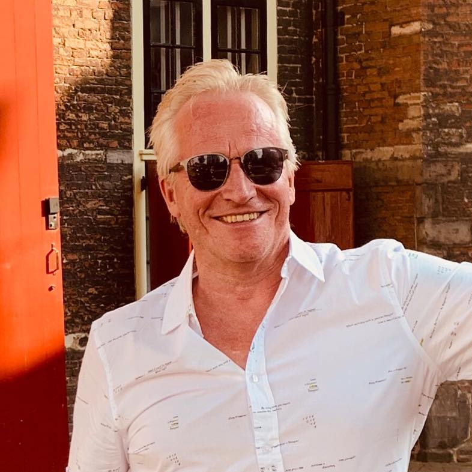

Over Mij

Op deze site ziet u schilderijen, houten sculpturen, 3D schilderijen en foto's van Cuba. Ik ontdekte mijn aanleg voor het schilderen nadat mijn zoontje mij vroeg iets op zijn schoolbordje te tekenen. Inmiddels heb ik tientallen exposities gehad in binnen- en buitenland. Hoogtepunten zijn mijn drie deelnames aan het Cucalambeana-festival in Cuba en het winnen van een cultuurprijs.
Contact